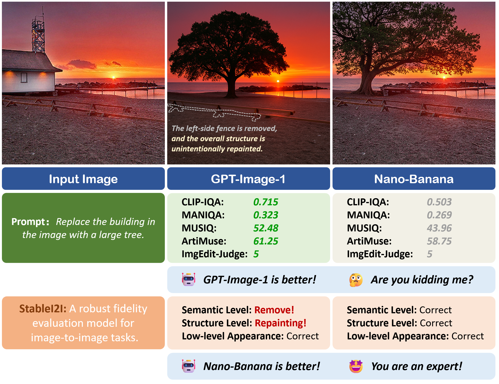

Recent image-to-image systems can follow user instructions and generate visually appealing results, but they often introduce unintended content drift between the input and output images. Existing evaluations mainly focus on instruction following, perceptual quality, or aesthetics, while largely overlooking whether the generated result remains faithful to the input image in both semantic content and spatial structure.
This limitation is critical in real-world I2I applications. As shown below, conventional metrics may favor outputs that look appealing, yet still miss substantial unintended changes such as structural repainting, object removal, or non-target content drift. StableI2I is proposed to address this gap by explicitly evaluating content fidelity and pre–post consistency in image-to-image transformation.

StableI2I jointly considers the input image, output image, and editing instruction, and is designed to work across a wide range of I2I tasks, including both image editing and image restoration. Instead of relying only on high-level semantic alignment or rigid mask-based comparison, it evaluates fidelity from complementary perspectives and provides more accurate, fine-grained, and interpretable judgments.